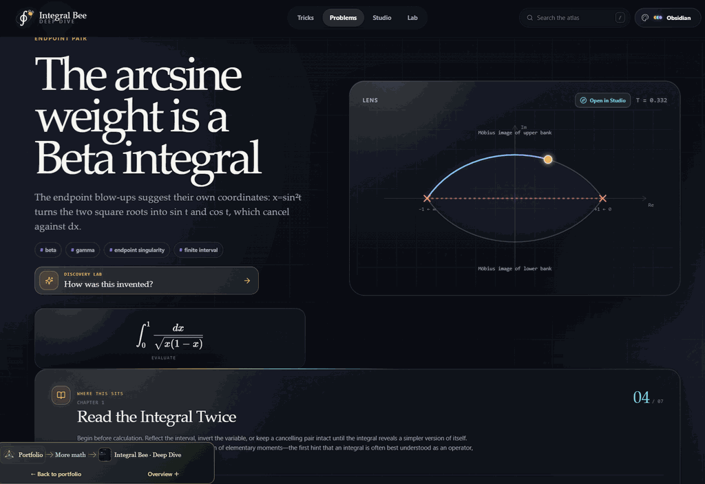
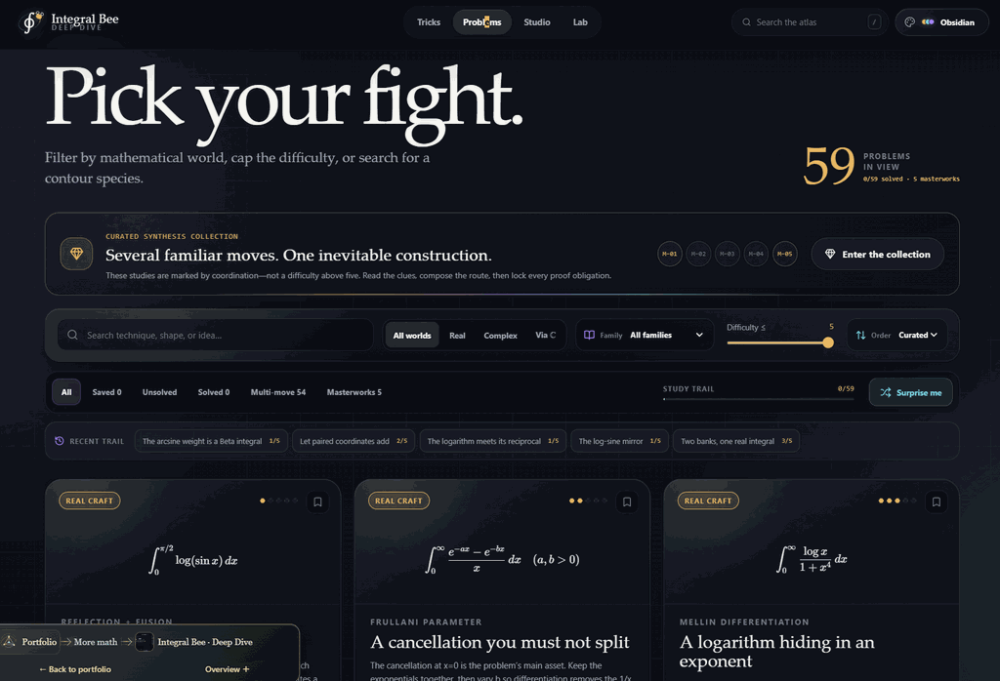
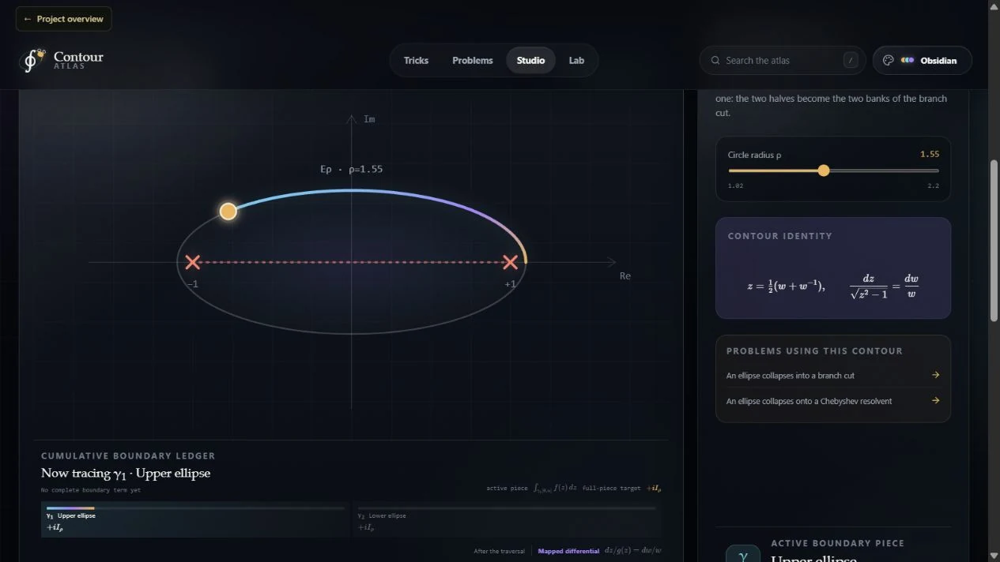

Interactive application Educational WIP
Interactive
Overview · selected highlights
Integral Atlas · A guide to tricky integrals
A work-in-progress notebook for studying tricky integrals. Start with a worked example, identify the useful move and inspect a contour when it helps explain the argument. Integral Bee supplied the original puzzle; the focus is now on a smaller set of reusable ideas.
DeformIntegrateExplain
- ∫
Recognize the structure
Look for symmetry, a useful substitution or a parameter worth varying.
- ⇒
Follow the argument
Read a worked route with the conditions that make each step legal.
- ∮
See the construction
Inspect contours, branch cuts and separate boundary contributions.
- ↔
Check the idea
Try the same move on a related example and track the assumptions it needs.
The reusable lesson is how to choose a method and justify it. Educational · work in progress.


